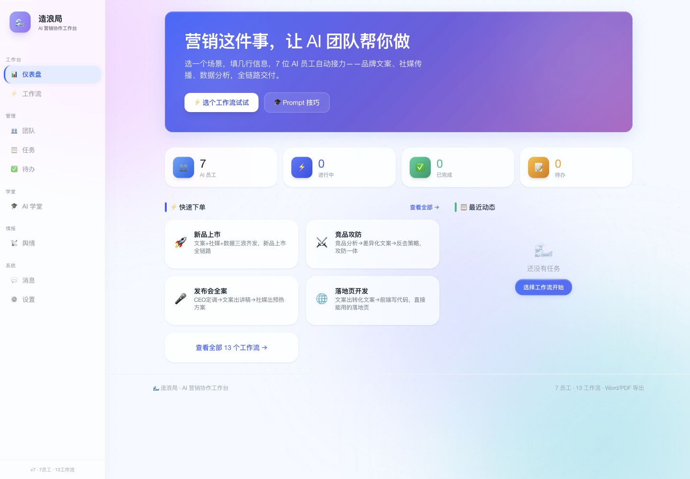
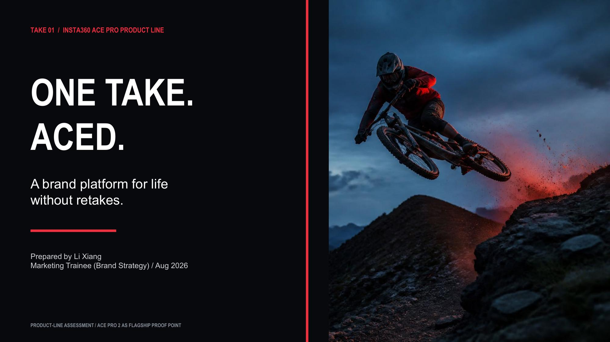

01
vivo X Fold6
围绕旗舰折叠新品，把续航、通信、AI Agent 与多任务能力转译为可感知的用户场景，并参与内容、演示与正式上市交付。

SHAWN LI — PRODUCT MARKETING & STRATEGY
从用户与产品出发，把技术能力转成用户价值，再用 GTM、内容与 AI 工作流推动落地。
Selected Work / Selected Cases
从真实新品上市、独立产品，到全球品牌策略与用户洞察方法。
围绕旗舰折叠新品，把续航、通信、AI Agent 与多任务能力转译为可感知的用户场景，并参与内容、演示与正式上市交付。
把市场信号、营销任务与 AI 协作放进一个可运行的工作台，减少重复整理和跨工具切换。

一份英文品牌策略作业：从传播审计出发，将分散的产品证据收束为可记忆、可验证的品牌平台。

把公开 UGC、媒体评测、竞品发布和产品反馈转成可以核验、归类并用于决策的结构化判断。

三个轻量项目，证明在真实节点、物料、现场与多方协同中的执行能力。
How I Think About Product Marketing
谁在什么情境下需要它？
产品真正能解决什么？
用户为什么应该在意？
如何让价值容易理解和记住？
用户会在哪里遇见它？
上市后发生了什么？
下一轮应该改变什么？
Experience
2026.03 — 2026.08
Product Marketing Intern
X Fold6 / X300U 旗舰新品上市、用户与竞品洞察、产品价值表达、跨团队交付与上市复盘。
2026.09 — 2027.07（预计）
社会科学硕士 · 可持续旅游
从地理、资源与可持续视角理解消费、体验与跨文化情境。
2022.09 — 2026.06
国际旅游与酒店管理学士
本科全英文授课；关注消费者体验、服务与跨文化沟通。
2023 — 2025
策展企划 / 会展项目 / 宾客体验
真实项目推进、现场交付、利益相关方沟通与一线用户反馈。
About / The Eighth Orbit
我的背景横跨消费体验、服务、旅游与跨文化研究，但职业主线始终指向产品、用户与市场。
我关注一个产品为什么对用户重要，也关心这套判断如何进入内容、上市执行、市场反馈与下一轮迭代。
Shawn Li · 李翔
AI & Tools
AI 提高搜索、整理和表达效率；事实核验、优先级与最终判断由人负责。
AI Search / Public Sources
收集市场信号并保留来源。
Excel / SPSS / AI
分类、对比与发现模式。
Framework / Synthesis
把信号转成判断与优先级。
PowerPoint / Keynote / AI
把价值写成用户能理解的表达。
Project Collaboration
推动内容、演示与节点落地。
Feedback Analysis
读取市场反馈并形成迭代输入。
Contact
Product Marketing · GTM · Consumer Insight · Strategy